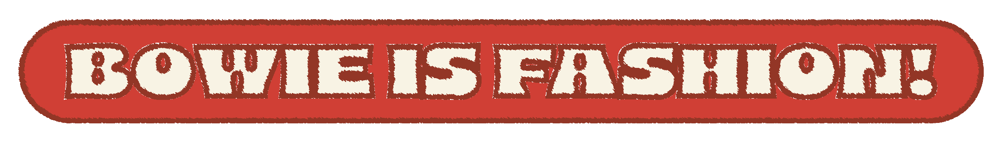
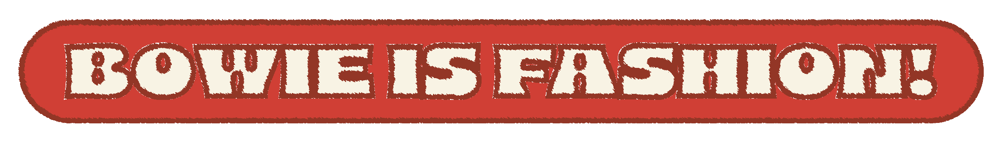

David Bowie is always going somewhere — Great Britain, Japan, Germany, US, outer space, up, down, in, out, across … He travelles back and forth in time (but mostly forth) and always leaves something remarkable behind.
"For him androgyny was a mental thing as much as a physical one, an expansion of perception, which is where his more literal followers and copyists often missed the point, assuming it was simply about appearance, girl as boy, boy as girl. In Bowie's mind, 'as different as the sexes are, they intermix, and this makes his heavy metal - and any other genre he appropriates and manipulates, from funk to folk, rock to soul, pop to jazz - a very altered proposition. The music and words are always refracted through an androgynous mind." (Paul Morley. 2016. The Age Of Bowie, p.225)
"He is a romantically irrational, already acutely self-reflexive 23-year-old, loftily rehearsing creative genius, as horny as Lucifer, a gawky manic eclectic obsessed with the provocative joys of juxtaposition, naturally attracted to excess and outrage, anxious he might be accused of some mental infirmity, blatantly relishing the alleged thin line between mental illness and artistic creativity, between mere eccentricity and absolute delirium, understanding the instabilities of the categories of male and female, preoccupied with his own physical sensations and the tortured history of his own soul, helplessly infatuated with the highfalutin, keen on acknowledging and addressing a strange world that is not exactly reassuring, intensely fascinated by the apocalyptic, mortality and religious ecstasy, dazzled by the mongrel interconnection between human destinies[…]." (Paul Morley. 2016. The Age Of Bowie, p.223-224)
"I like the idea he was born at 11.50 p.m., a mere ten minutes before midnight and 9 January, another day, and another life, altogether. A last-minute gasp. Manipulating his circumstances already, he fought to be born the same day as Elvis - and Shirley." (Paul Morley. 2016. The Age Of Bowie, p.67)
"Man müsste mal eine Umfrage unter Berlinern machen: »Haben Sie David Bowie gesehen?« Selbst unbestechliche Köpfe geraten da ein wenig aus der Fassung und berichten, dass sie einmal erlebt haben, wie er im Zug durch den Bahnhof Zoo fuhr.
Eine Erscheinung. Etwas anderes ist er ja eigentlich auch nie gewesen." (Tobias Rüther. 2016. Helden - David Bowie und Berlin, p.130)
DAVID BAILEY: "I shot David Bowie a lot over the years, and did some great pictures of him with Catherine Deneuve for their film The Hunger, in 1982, although he was always very reserved, and had a definite vier of how he wanted to be portrayed. Which made it very difficult to take a picture of him if you were trying to be creative. In the early days it was easier to take a celebrity's photograph, because they didn't really know what to expect, but now they all know what they're going to get.
The thing I hate is when someone phones and says, I've got this great idea?'I always say, I've got a better idea. Why don't you come to the studio and I'll shoot you against a nice white background.' Bowie always had very definite ideas about how he wanted to be photographed, which meant he should have been shot by someone else, not me. […] And in his heyday Bowie was a lot like an actor, always acting like someone else. They're always trying to put one over on you, because they want you to take a snapshot of their current version of themselves.
It depends what mood they re in." (Dylan Jones. 2018. David Bowie - A Life, p.292)